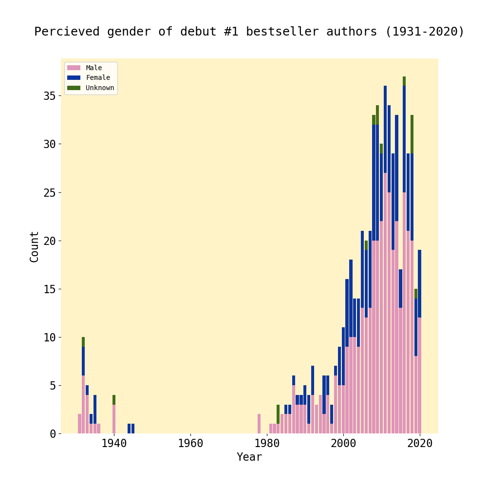

When Chloe Gong’s book, These Violent Delights, made it on the New York Times bestseller list, she said: “the size of my ego when distant relatives brag about their kids going to Ivy League schools and my grandma pulls the ‘my granddaughter graduated from an Ivy League as a New York Times bestseller’ card.” Gong’s enthusiastic reaction demonstrates the cultural relevance of the Times’ bestseller list – being ranked on the list is a marker of cultural relevance, or excellence.
However, the logic behind who gets on the bestseller list is clouded, and suggests that it might not be an accurate list at all. According to the New York Times, the data for book sales collected on the list is reported by individual book retailers across the country, but the unit sale data is held as confidential. Moreover, according to professor Laura B. McGrath, the New York Times’ list has another list working behind the scenes: a list of books that are projected to become bestsellers. There is, however, no known methodology behind this list either; in fact, these pre-selected books may be manually curated, which introduces the problem of bias and favoritism. And finally, while the New York Times provides a short overview of their methods, they do not provide the statistical formulas they use to calculate bestseller rankings. Overall, these three factors demonstrate that there is a high potential for bias in the New York Times bestseller list.
This leads me to the research question at the center of this project: Are names that are perceived as associated with particular genders over or underrepresented on the New York Times hardcover fiction bestseller list? How has that changed over time, if at all? I chose to focus on gender as a contributing factor – specifically, perceptions of gender based on first names – because of the phenomenon of name bias. Studies have shown that job applicants with masculine names are more likely to be called in for an interview than applicants with feminine names. Upon finding out that the New York Times’ bestselling titles lists are partially pre-selected, I was interested in how name bias could possibly affect these rankings as well. To address this question in this project, I focus on one particular list: the hardcover fiction bestseller list. I also draw upon two data sets: one with book rankings data, and one with data on the associations between different first names and gender.
Male names have dominated the New York Times bestseller list.
We know this -- patriarchy and misogyny influence everything in our world, and it isn't surprising (at least for me) to see it reflected in
the New York Times bestseller list. In the beginning of my analysis, I found that -- out of my data set of around seven thousand entries
(which included around 7901 authors) -- 4178 were authored by a person with a masculine first name, 2870 were authored by a person with a
feminine name, and 853 were found to be unknown or indiscernible through gender. In other words: 52.8 percent of the authors
on this list have masculine sounding names, while only 36.3 percent have feminine names.
But fret not! According to other projects that have investigated the gender ratio of authors on the New York Times bestseller list, we have made progress over time. According to Rosie Cima, an investigative data journalist who wrote an article for The Pudding on this very topic, "women finally made steady gains on the list" during the 1990s, and in 2001, the split between women and men on the list was fifty-fifty. And I found that this general trend was reflected in my own data analysis. Due to my time constraints and the limits of my own expertise, I took a different approach to analyzing New York Times bestselling titles data, but the key takeaway is similar: it seems that we have been getting closer to gender equality on the bestseller list.
But fret not! According to other projects that have investigated the gender ratio of authors on the New York Times bestseller list, we have made progress over time. According to Rosie Cima, an investigative data journalist who wrote an article for The Pudding on this very topic, "women finally made steady gains on the list" during the 1990s, and in 2001, the split between women and men on the list was fifty-fifty. And I found that this general trend was reflected in my own data analysis. Due to my time constraints and the limits of my own expertise, I took a different approach to analyzing New York Times bestselling titles data, but the key takeaway is similar: it seems that we have been getting closer to gender equality on the bestseller list.
As Cima writes, this is "good news." There are more female bestselling authors now -- isn't that great? At least on first glance, it seems that way. But does this conclusion hold true if we look at different metrics for measuring representation? Specifically, let's take a look at the answers to the following three questions:
Among the book titles that have reached number one on the list, how many of them were authored by people with masculine names? Feminine names? Names with an indiscernible gender?
Among the book titles that debuted at number one on the list, how many of them were authored by people with masculine names? Feminine names? Names with an indiscernible gender?
Among the top ten titles that have been on the list for the most weeks each year, how many of them were authored by people with masculine names? Feminine names? Names with an indiscernible gender?
Gender balance of authors of #1 bestsellers over time
There's no doubt about it -- the number of #1 bestselling authors with feminine names has increased over time. In 1932, out of the
17 authors that had titles ranked first on the bestselling hardcover fiction list, 10 were authors with masculine names, five were
authors with feminine names, and two were authors with names of an indiscernible gender. It is likely that, for that year, around
29% of the #1 bestselling authors were women. In comparison, in 2020, it is likely that 37% percent of the #1 bestselling authors
were women. We are seeing a clear trend towards more female representation among #1 bestselling authors.
This representation is, however, still not enough to be considered gender equality. Authors with masculine names, who are likely to be men, still make up an overwhelming majority of the #1 bestselling authors on the list.
This representation is, however, still not enough to be considered gender equality. Authors with masculine names, who are likely to be men, still make up an overwhelming majority of the #1 bestselling authors on the list.

Gender balance of authors of debut #1 bestsellers over time
What if we take a look at authors with debut #1 bestsellers? The trend identified previously holds true. Once again, we are seeing a trend
towards more female representation among authors with debut #1 bestsellers on the list. In 1931, all the authors that debuted with a title
at #1 had masculine names, and so were likely men. But in 2020, 7 out of the 19 books on the list that debuted at #1 were authored by people
with feminine names (the rest were authors with masculine names).
But also, once again, this representation is not enough to be considered gender equality. Authors with masculine names still make up a significant portion of the debut #1 bestselling authors on the list.
But also, once again, this representation is not enough to be considered gender equality. Authors with masculine names still make up a significant portion of the debut #1 bestselling authors on the list.
Gender balance of top ten bestseller authors over time
Finally, we have arrived at the final metric: authors that published books within the top ten books on the list. I measured this for each year by
sorting the bestselling titles by the number of weeks spent on the list. I then, for each year, took the ten titles that had spent the most time
on the bestselling books list.
For this metric, still, we see that men dominate. In fact, unlike the last two metrics, there is not even a general trend of improvement over the years. The gender balance has shifted for some years, but overall, it has remained fairly static: men have authored a majority of the top ten bestselling books since 1931.
For this metric, still, we see that men dominate. In fact, unlike the last two metrics, there is not even a general trend of improvement over the years. The gender balance has shifted for some years, but overall, it has remained fairly static: men have authored a majority of the top ten bestselling books since 1931.
As a society, we have made progress. But we still have a long way to go.
We've gotten a lot closer to gender equality over the last century. But it is clear that we are not quite there yet. It is fantastic that there are more female authors on the New York
Times bestseller list. And it would be even more fantastic if there were more female authors writing the top ten books on the list, reaching #1, or even debuting at #1.
For there to be true equality, women need to be represented, yes. But we need to be represented in more ways than one -- that is, we need to be able to achieve excellence, as well.